It was extremely difficult to narrow down the best rock bands of all time, thanks to the volume of artists and the smorgasbord of sub-genres (alternative, rock, psychedelic, punk, new wave, grunge, metal, just to name a few—and all of the sub-sub-genres within those). Because of this, there are going to be bands here not everyone agrees with, and there may be bands missing that may shock some. That's OK! At its core, rock 'n' roll is about rebellion, going against the grain and doing your own thing—and doing it loudly and with abandon.
The Beatles
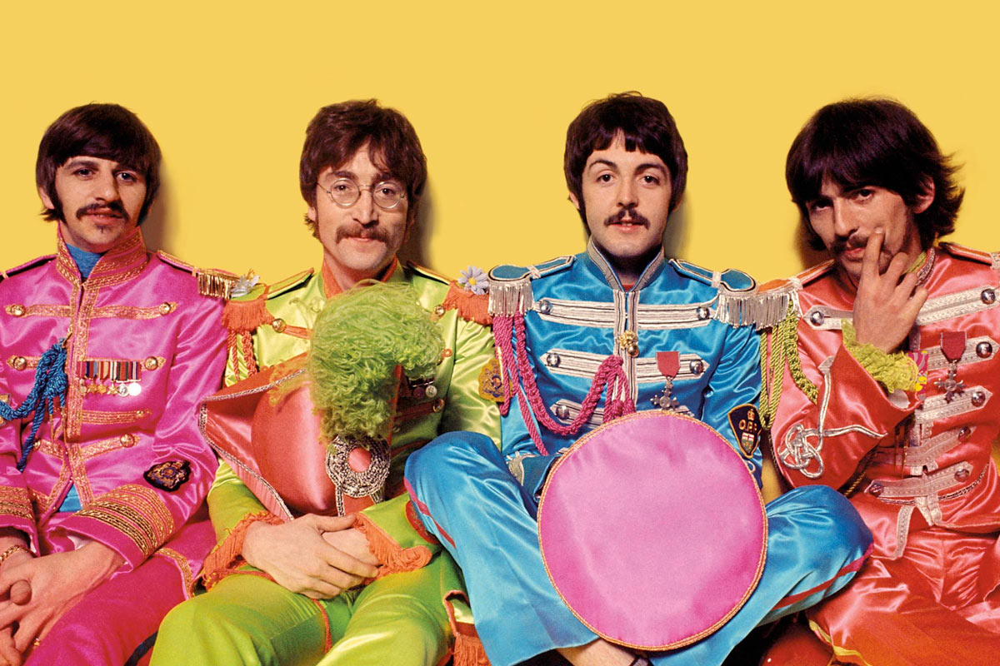The Beatles were an English rock band formed in Liverpool in 1960, comprising John Lennon, Paul McCartney, George Harrison and Ringo Starr. They are regarded as the most influential band of all time and were integral to the development of 1960s counterculture and the recognition of popular music as an art form. Read more...
Deep Purple
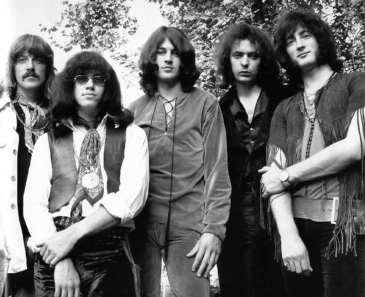Deep Purple are an English rock band formed in London in 1968. They are considered to be among the pioneers of heavy metal and modern hard rock, although their musical style has varied throughout their career. Read more...
Eagles
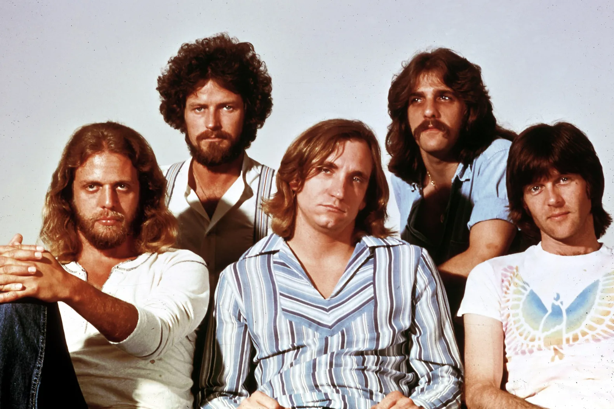The Eagles are an American rock band formed in Los Angeles in 1971. With five number-one singles and six number-one albums, six Grammy Awards and five American Music Awards, the Eagles were one of the most successful musical acts of the 1970s in North America and are one of the world's best-selling bands, having sold more than 200 million records worldwide, including 100 million sold in the US alone. Read more...
Genesis
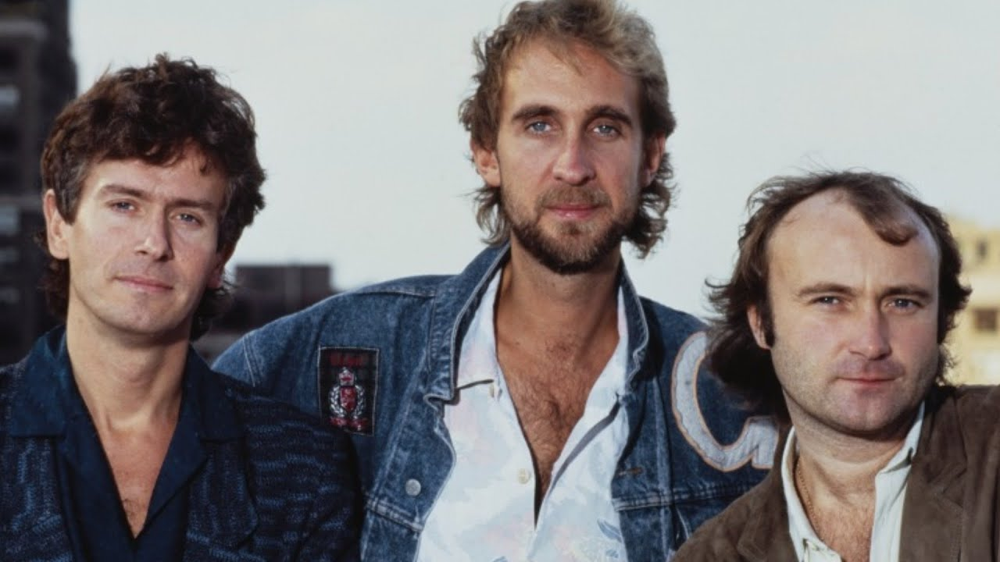Genesis were an English rock band formed at Charterhouse School, Godalming, Surrey, in 1967. The band's longest-existing and most commercially successful line-up consisted of keyboardist Tony Banks, bassist/guitarist Mike Rutherford and drummer/singer Phil Collins. In the 1970s, during which the band also included singer Peter Gabriel and guitarist Steve Hackett, Genesis were among the pioneers of progressive rock. Read more...
The Jimi Hendix Experience
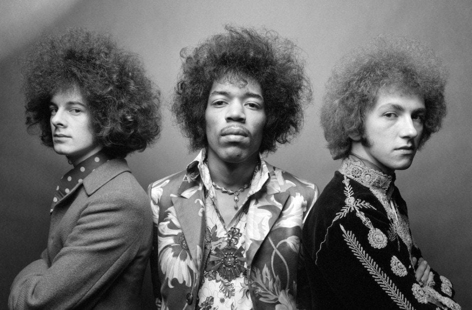The Jimi Hendrix Experience was an American-English rock band that formed in London, England, in 1966. The band was made up of singer, songwriter, and guitarist Jimi Hendrix, drummer Mitch Mitchell, and bassist Noel Redding. Read more...
King Crimson
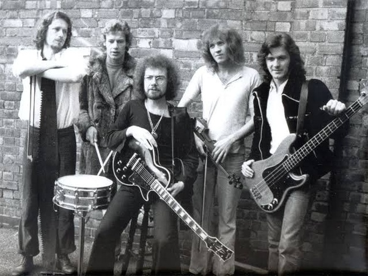King Crimson were an English progressive rock band formed in 1968 in London. The band drew inspiration from a wide variety of music, incorporating elements of classical, jazz, folk, heavy metal, gamelan, blues, industrial, electronic, experimental music and new wave. Read more...
Led Zeppelin

Led Zeppelin were an English rock band formed in London in 1968. The group comprised vocalist Robert Plant, guitarist Jimmy Page, bassist and keyboardist John Paul Jones, and drummer John Bonham. With a heavy, guitar-driven sound, they are cited as one of the progenitors of hard rock and heavy metal, although their style drew from a variety of influences, including blues and folk music. Read more...
Oasis
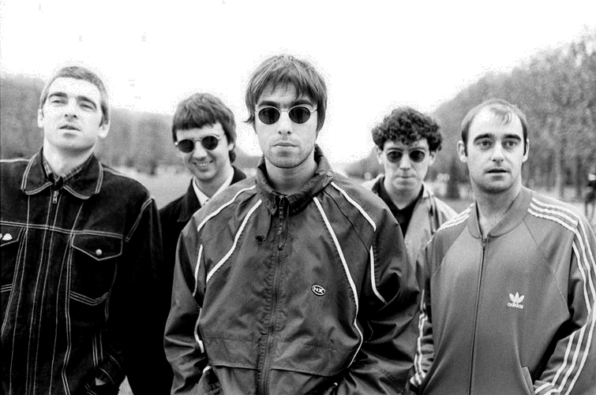Oasis were an English rock band formed in Manchester in 1991. Originally known as the Rain, the group initially consisted of Liam Gallagher (lead vocals, tambourine), Paul Arthurs (guitar), Paul McGuigan (bass guitar) and Tony McCarroll (drums), with Liam's older brother Noel Gallagher (lead guitar, vocals) joining as a fifth member a few months after their formation. Read more...
Pink Floyd

Pink Floyd are an English rock band formed in London in 1965. Gaining an early following as one of the first British psychedelic groups, they were distinguished by their extended compositions, sonic experiments, philosophical lyrics, and elaborate live shows. They became a leading band of the progressive rock genre, cited by some as the greatest progressive rock band of all time. Read more...
The Rolling Stones

The Rolling Stones are an English rock band formed in London in 1962. Active across seven decades, they are one of the most popular and enduring bands of the rock era. In the early 1960s, the band pioneered the gritty, rhythmically driven sound that came to define hard rock. Read more...
Rush
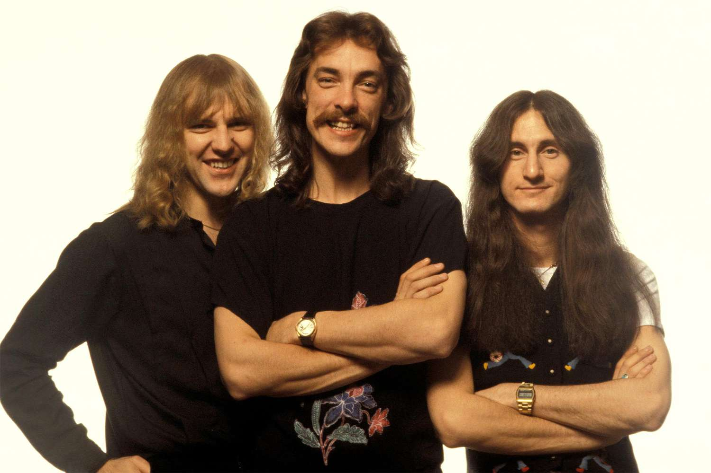Rush was a Canadian rock band that primarily comprised Geddy Lee (bass guitar, keyboards, vocals), Alex Lifeson (guitar) and Neil Peart (drums, percussion, lyricist). The band formed in Toronto in 1968 with Lifeson, drummer John Rutsey, and bass guitarist and vocalist Jeff Jones, whom Lee immediately replaced. Read more...
The Storkes
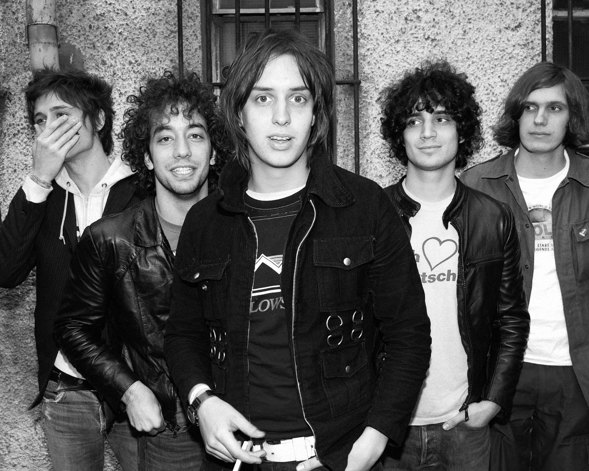The Strokes are an American rock band formed in New York City in 1998. The band is composed of lead singer and primary songwriter Julian Casablancas, guitarists Nick Valensi and Albert Hammond Jr., bassist Nikolai Fraiture, and drummer Fabrizio Moretti. They were a leading group of the early-2000s post-punk revival and garage rock revival movements. Read more...
The Doors
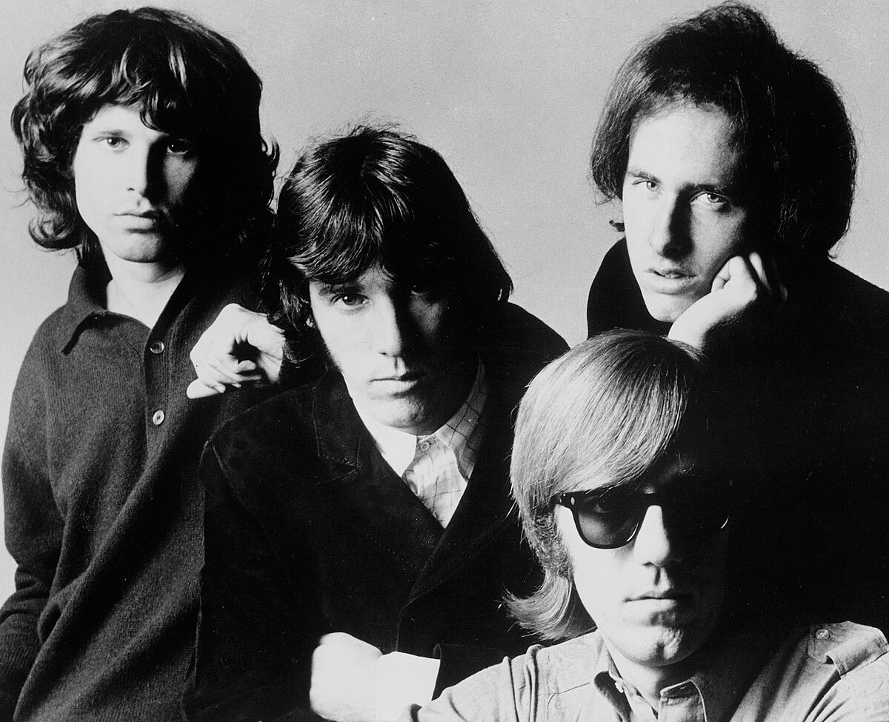The Doors were an American rock band formed in Los Angeles in 1965, with vocalist Jim Morrison, keyboardist Ray Manzarek, guitarist Robby Krieger and drummer John Densmore. They were among the most influential and controversial rock acts of the 1960s, primarily due to Morrison's lyrics and voice, along with his erratic stage persona and legal issues. The group is widely regarded as an important figure of the era's counterculture. Read more...
The Smiths
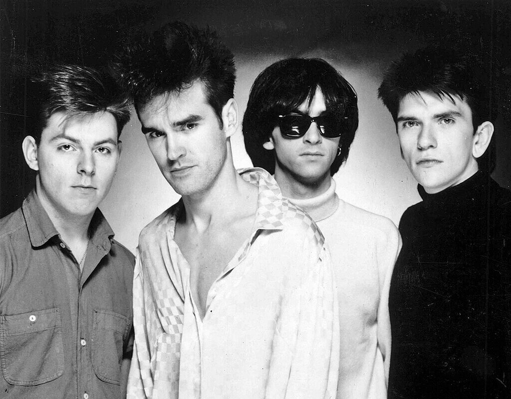The Smiths were an English rock band formed in Manchester in 1982, composed of the singer Morrissey, the guitarist Johnny Marr, the bassist Andy Rourke, and the drummer Mike Joyce. Morrissey and Marr formed the band's songwriting partnership. The Smiths are regarded as one of the most important acts to emerge from 1980s British independent music. Read more...
Yes
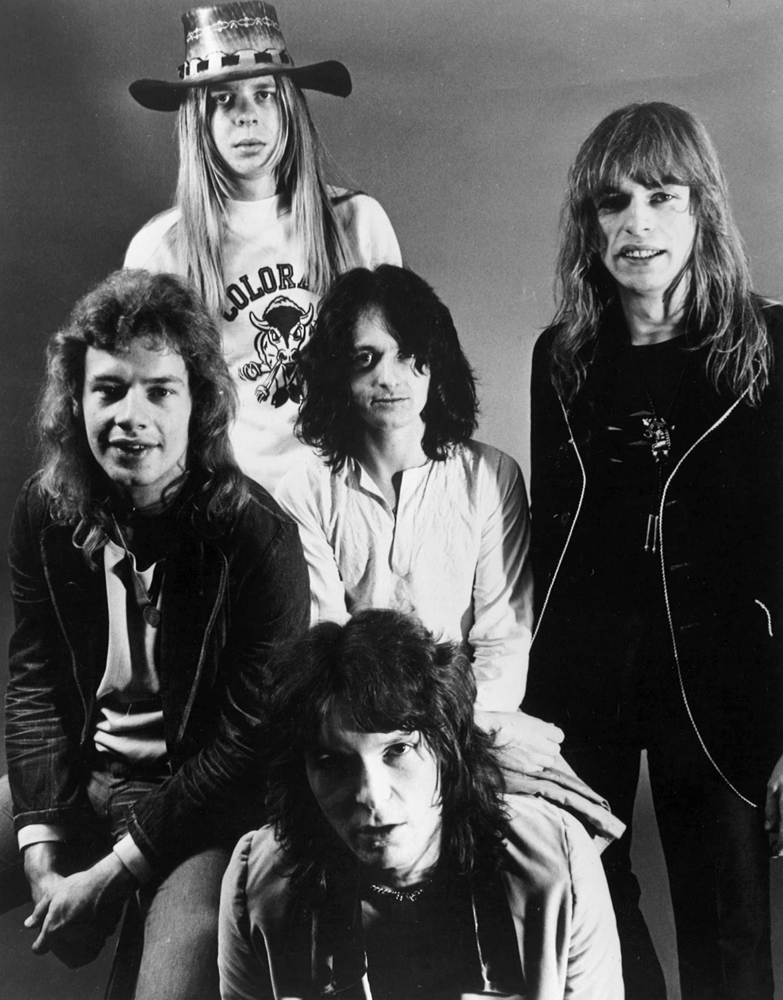Yes are an English progressive rock band formed in London in 1968 by lead singer Jon Anderson, bassist Chris Squire, guitarist Peter Banks, keyboardist Tony Kaye, and drummer Bill Bruford. The band has undergone numerous lineup changes throughout their history, during which 20 musicians have been full-time members. Yes have explored several musical styles over the years and are most notably regarded as progressive rock pioneers. Read more...